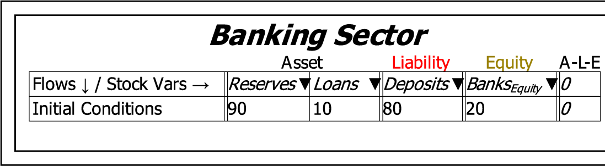

Monetary models are actually simpler to build in Minsky than block diagram models, because all you have to do is to name the accounts in the Godley Table, and then define the flows on the canvas. Minsky automatically generates the differential equations for you.
Building the model starts with placing a Godley Table on the canvas by clicking on the Godley Table operator . The figure below shows a single Godley Table on the canvas, which has been labelled ``Banking Sector'' using the context menu ``Title'' command.

Next either double-click on the icon, or choose ``Open Godley Table'' from the context menu, to bring up the Godley Table form:

We'll build a model of private money creation in this first example.